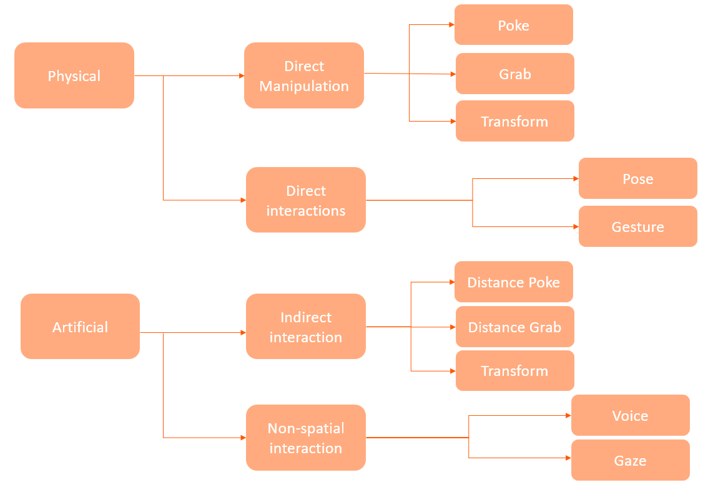

What are Interaction patterns?
One of the many features which make a VR experience enjoyable and of high quality are the interactions between the user and the virtual environment; these are interaction patterns. An example would be different ways of picking up an object and resizing it. With the help of camera, sensor, and controller information, it is possible to make the movements as natural as currently possible.
To appropriately interact with the object, it is required for them to have the physics properties; this means they are touchable, can fall due to gravity, have collision properties, etc.
There is not one pattern that fulfills all needs, which would be challenging to implement; therefore, it is essential to know what you need your application to do and know about available options and their appropriate uses. There are a variety of available interaction patterns; however, some depend on the capabilities of the VR glasses and the software used. The patterns are described below.
The types of Interaction Patterns
Interaction patterns can be categorized into different types, including physical interaction patterns and artificial interaction patterns. Categorizing these interaction patterns is important as it helps developers understand the various methods that can be used to enable users to interact with the virtual environment intuitively and naturally. This, in turn, can enhance the overall user experience in XR and help create more engaging and immersive virtual environments. The categorization of interaction patterns in XR is illustrated in the following image.
 Interaction Pattern Categorization.Physical Interactions
Physical interactions refer to the methods with which the user interacts with the virtual objects and environment with the help of the physical body; this gives the user a more natural and intuitive feel.
Direct Manipulation
Direct manipulation refers to the ability to manipulate virtual objects in a VR environment using physical hands that directly interact with virtual objects in a 3D environment.
Poke Pattern
It is the method in which selection or interaction with an object is made by pointing at it with the physical hand, which is done by tracking it with the cameras. This interaction can take many forms, such as pressing a button, selecting an item in a menu, or activating a tool. The poke pattern is often used for precise interaction with small objects or UI elements. For example, a user might poke a button to open a menu or select a tool or 'poke' a checkbox to toggle a setting.
Grab Pattern
In this pattern, the object to be interacted with needs to be within arm's reach so it can be directly touched and picked up with the virtual hands, which mimics the use of physical hands. A good practice for this pattern is to calculate or input the user's arm length, which gives the user a more natural feel to the interaction. This can be done by asking the user to hold out the hands in front of the body when the application starts; however, the headset usually does this automatically.
The grab pattern can take many forms, such as picking up an object, moving it around, rotating it, or scaling it. This pattern is often used for interacting with objects that are too large or complex to manipulate using the poke pattern. For example, a user might grab a virtual object to move it from one location to another or rotate it to inspect it from different angles.
Transform
This type of interaction allows the user to manipulate virtual objects. Transformation refers to the ability to modify the size, position, and/or orientation of a virtual object using direct manipulation. A user can use various methods to achieve this, by gestures, buttons, or other input devices. One purpose of this method is to have the user optimize objects within the VR environment to their preference and needs.
For example, a user could use the transformation pattern to scale up or down an object to get a better view or to rotate an object in order to examine it from different angles. Another use case could be in a design or construction application, where a user could use the transformation pattern to move, resize, and rotate virtual objects to create a 3D model of a building or product.
Direct Interaction
Direct interaction involves more abstract methods for interaction in the virtual environment.
Pose
Pose uses hand or body positions to trigger specific actions or behaviors within a virtual environment. It can be done using a variety of hand poses, such as making a fist, pointing with a finger, or holding out an open hand. These poses are recognized by tracking the hands and can be assigned to different actions or functions. For example, holding out an open hand might trigger a grab function, while making a fist might trigger a punch or hit function. Pose-based interaction can be helpful in creating a more immersive and natural-feeling interaction, as users can use hand gestures that feel more intuitive and familiar to them.
Gestures
Gestures are hand or body movements that are recognized by the system to perform actions. They can be used to perform various actions such as selecting, dragging, and dropping objects, navigating menus, and triggering events. For example, a user could perform a "thumbs up" gesture to confirm a selection or a "swipe" gesture to switch between different views. The main difference between this and pose is that pose is based on a static position, whereas gestures are based on movements. An example is a swiping movement to either scroll through a menu or teleport from one spot to another.
Artificial Interaction Pattern
Artificial interactions, however, refer to using an input device to interact with objects.
Indirect interactions
Indirect interaction refers to a type of artificial interaction pattern where users indirectly manipulate objects or interface elements using controllers rather than directly using their hands. Compared to direct manipulation, where the user needs to be close to the object, the indirect interaction can be done further away due to ray casting.
Poke Pattern
It is the method in which selection or interaction with an object is made by pointing at it with an input device such as a controller. It is often used together with ray casting, which is the mathematical calculation defining a line in a 3D space. The ray is cast from the input device, selecting the object by the intersection between the ray and the object in the virtual environment. For example, a user could point at a button in a virtual interface and press a button on the controller to select it.
Grab Pattern
Similarly to the Grab pattern in direct manipulation, grab is used to pick up or manipulate virtual objects. However, this can be done from a further distance with the help of a ray cast. For example, a user could grab a virtual object by pressing a button on the controller while the user could then move or rotate the object by moving or rotating the controller.
Non-spatial Interaction
This method does not rely on the user's physical movements; the input methods are used here. This interaction is a great alternative for users that are not able to move or use hand gestures; therefore, it is helpful to have this method implemented into applications to make it more accessible and diverse. The following are examples of non-spatial interactions:
Voice commands
This method allows users to interact with the virtual environment using spoken commands, which are translated into actions in the virtual environment using speech recognition technology. Users can issue commands or engage in natural language conversations with the system. For example, a user can say: "open the door," and the system will respond by animating the door opening. Voice command interaction is useful in scenarios where hands-free interaction is desired, or users may have limited mobility.
Gaze-based interaction
This method allows users to interact with the virtual environment using their gaze direction by using eye-tracking technology to detect the point where the user is looking and use it to activate or select interface elements. Users can select objects or start functionality by looking at them for a longer time or performing specific gaze gestures. Gaze-based interaction is often used for hands-free interaction, such as in virtual reality, where users may not have access to physical controllers.